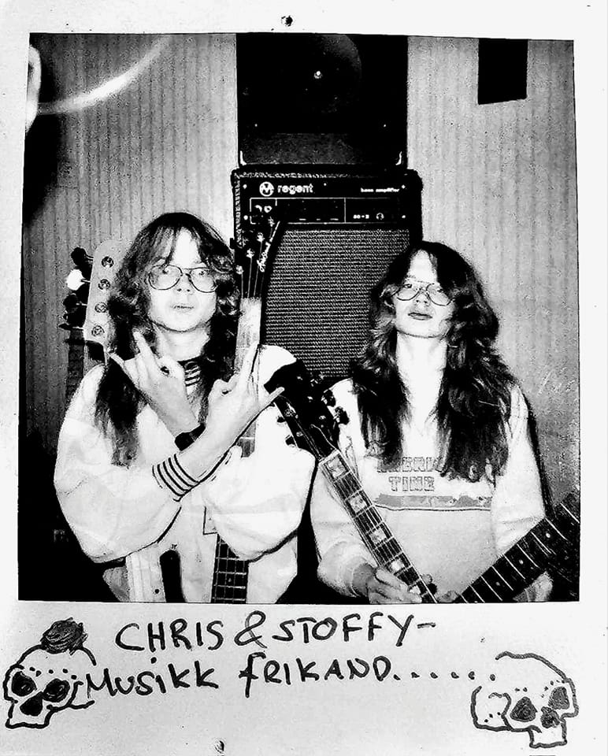
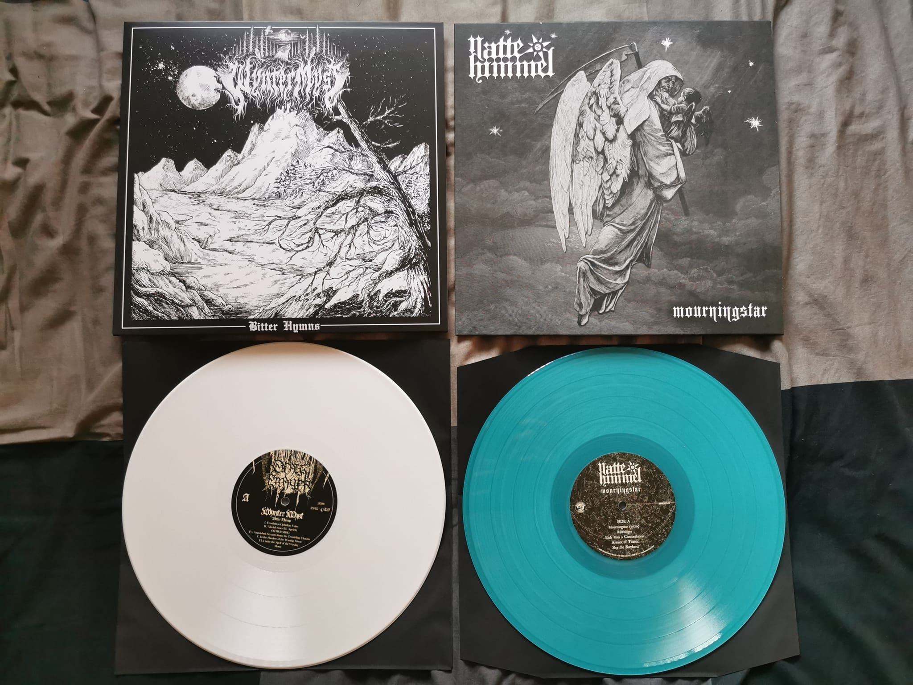

Nattehimmel is X. Botteri on guitars, J.Fogarty with vocals, guitars and
keyboard, C.M Botteri on bass and S. Rothe on drums.
Nattehimmel is a direct descendent of early In The Woods - injecting new life into the early 90’s
Black/Pagan Metal sound which they helped to shape.
An impressive group of musicians who've already garnered attention amongst peers
and fans alike. Done several interviews with magazines and blogs from different countries.
Checkout
an interview of theirs underneath, translated from dutch.
The Night Sky
Nattehimmel translated from norwegian means "Night Sky". It evokes a curiosity, the idea of the infinite greatness of whatever may be out there in the night sky. Nattehimmel is not just a band starting of on their journey, they are more so on a different, new chapter. It's a continuation from where the band "The Woods" left off and so they might have older fans who might still embrace them and their black/pagan metal sound. Some of the music they've come out with have been years in the making.
Old sketched ideas and already recorded drums are what they have currently used as a foundation for what they are now. For a band with so much previous experience and members with ideas, years in the making it's no wonder that their sound is so precisely curated. Therefore it's absolutely no wonder that in just under a month of starting, Hammerheart records took the first, maybe scary step into a relationship with a contract to sign them to their label. They came for the same reasons as the fans. It was Nattehimmel's ideas for the metal scene that surely piqued interest in them as it does us.
Nattehimmel explaining their name in an interview with Heavymetal.no say "It is the difference and the same for everyone looking for something out there, they all gaze at the stars wondering what's out there. Christopher reveals it was a play on the excellent, enormously powerful album from the band Thule (Natt), and it was in fact James arriving with the full name". This group is comprised of talent and know-how and with it bring something new to the table. There is nothing to do, but follow along as they rise in the metal scene and share their interpretaion of metal.

